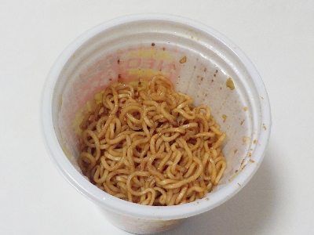
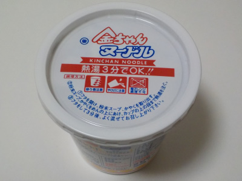
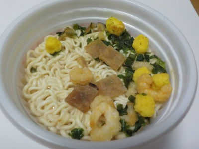

徳島製粉のNEO金ちゃん焼きそば。
2025/01/25

縦型のカップ焼きそばです。お湯を抜くと麺が底に寄っちゃって少なく見えますね。後、容器が小さいのでソースが混ぜにくかったです。
容器が小さいと作りにくいですが、保存はしやすいです。食べる時も無駄なスメースを使わないので置きやすい。ゴミも捨てやすいのでメリットの方が多い気がします。
エネルギーは415kcal食塩相当量3.3gです。焼きそばの味が濃い目に感じれるので、満足感が高かったです。でも食事にしては少ないのでおやつとか夜食かな。
塩分が多いけど、たまに食べるのはいいかな。
徳島製粉の金ちゃんヌードル。
2022/09/18

金ちゃんヌードルを初めて買いました。たぶん食べたのも初めてです。

スープと具は日清カップヌードルに近い味かなと思いました。金ちゃんヌードルは麺がラーメンなので、カップヌードルよりもラーメンらしいと思いました。
私の中で日清カップヌードルはカップヌードルでカップラーメンっじゃないって思っています。
この商品は美味しいしょう油味のカップラーメンだと思いました。徳島のお土産は金ちゃんヌードルがいいなと思いました。